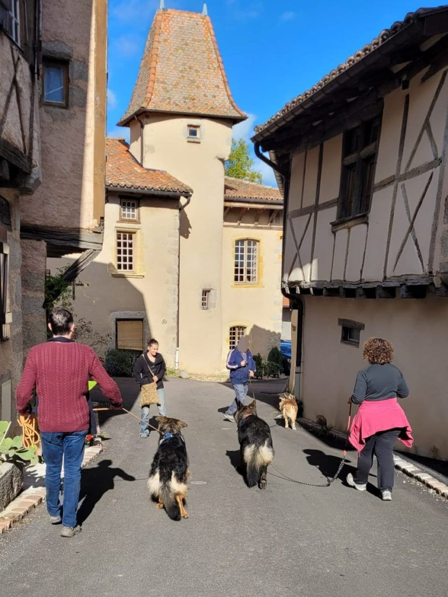
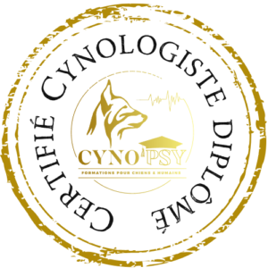
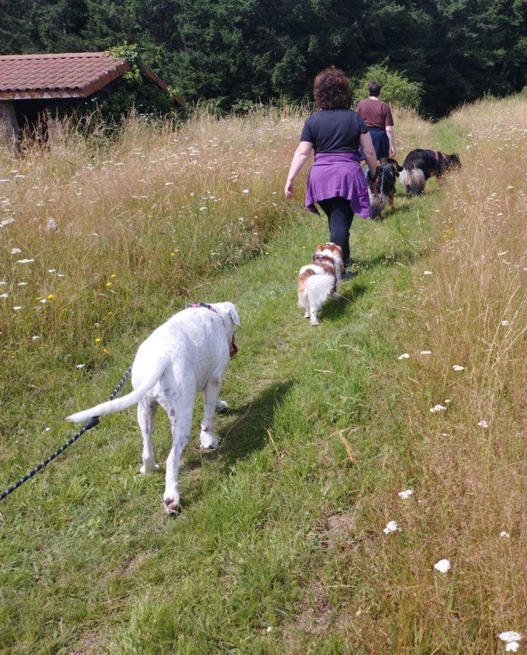
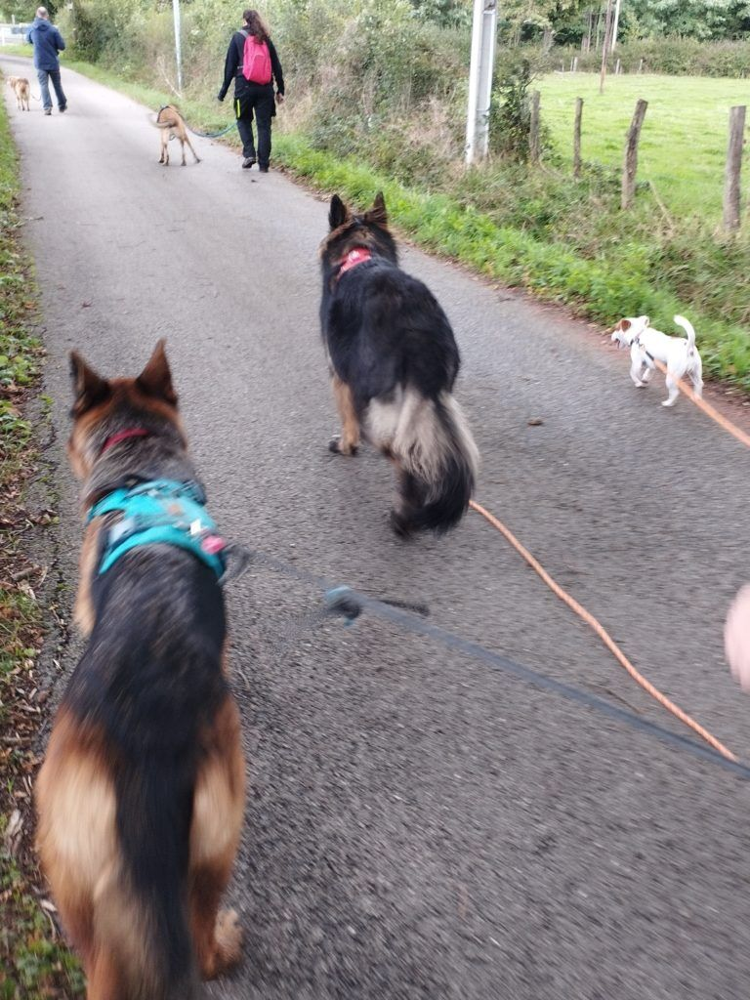
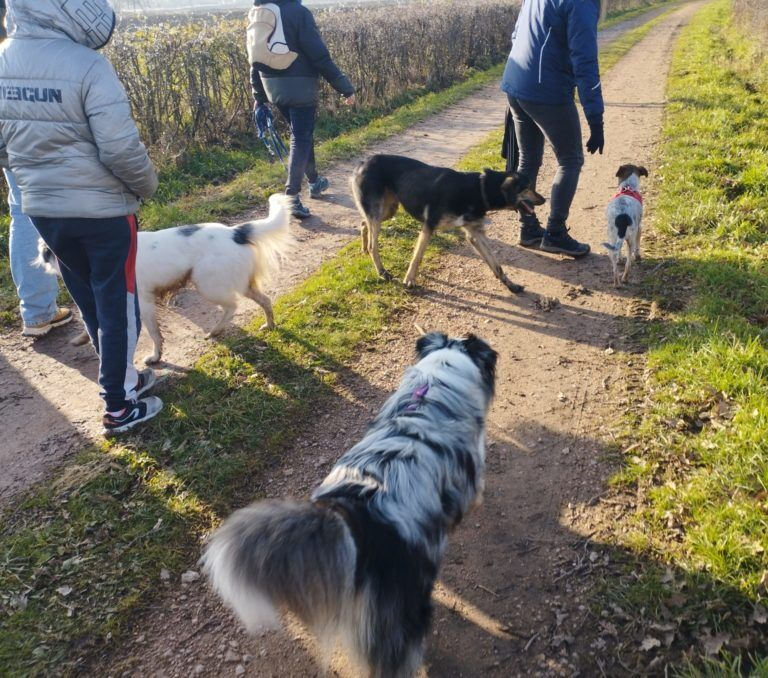
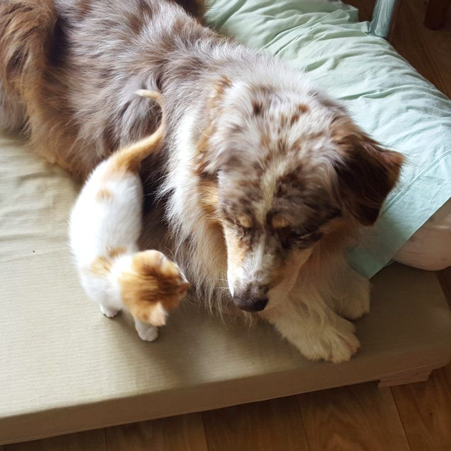
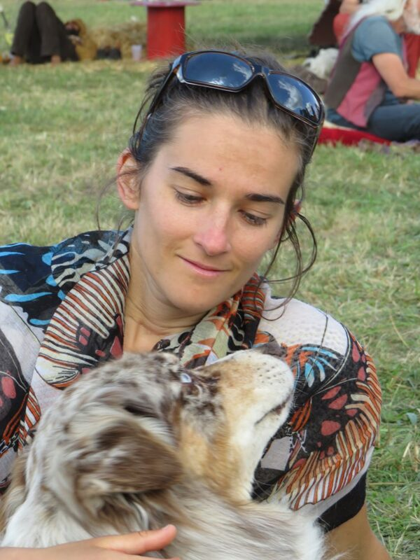

Chez vous, sur vos balades
Des séances personnalisées à votre domicile et sur les lieux de vos promenades habituelles.
Avec votre éducateur et comportementaliste canin Marlène Monteagudo, spécialiste en psychologie canine et relation Chien/Humain. Des séances personnalisées à votre domicile et sur les lieux de vos promenades habituelles, dans le Grand Roanne et les communes aux alentours.


Mon but est d’apporter un confort de vie dans la relation avec votre animal en respectant vos attentes. Sans jugement moralisateur car « chaque maître fait ce qu’il peut avec les connaissances qu’il a ». Gardez bien en tête qu’il n’est jamais trop tard pour vivre en harmonie avec son animal.
Des séances personnalisées à votre domicile et sur les lieux de vos promenades habituelles.
Une méthode éducative et rééducative au cas par cas, peu importe l’âge ou la « tendance génétique » de votre chien.
Le respect des besoins aussi bien physiques, que mentaux et qu’émotionnels.
« Les chiens, qui ne savent rien, comprennent ce que nous disons, et nous qui savons tout, nous ne sommes pas encore parvenus à comprendre ce qu’ils disent. »Octave Mirbeau
Il éduque et rééduque les chiens en guidant les maîtres à utiliser un langage qui soit compréhensible par l’animal. En analysant tout le contexte, il étudie aussi bien le passif que le quotidien du chien, pour lui apporter des solutions pérennes.
Qu’il soit issu d’un élevage, d’un refuge ou d’un don entre particuliers, il est essentiel d’accorder vos attentes et vos disponibilités aux besoins qu’aura votre chien, afin d’éviter les troubles du comportement.
La bonne attitude, les bons gestes et réflexes, la juste intonation de voix… il existe une multitude d’astuces pour vous faire comprendre facilement et clairement par votre chien.
Accueil d’un nouvel animal, naissance de votre bébé, déménagement… Vous y préparer limitera son stress et le vôtre. Ces situations sont une superbe aubaine pour partir sur de nouvelles bases éducatives.
Aboiement, agressivité, peur, surexcitation, fugue… sont les troubles les plus constatés. Ils s’installent doucement et deviennent persistants avec le temps : mieux vaut trouver des solutions efficaces et durables.
Avant de prendre la délicate décision de vous en séparer, il est primordial de prendre conseil auprès de professionnels expérimentés. Votre bien-être personnel est tout aussi important.
Une médiation bien menée peut vous aider à ne pas vous fâcher avec le voisinage : discuter calmement et trouver des solutions approuvées par les deux parties.
Je peux vous aider à analyser la situation, à contrôler votre niveau de stress, ainsi qu’à adopter les bonnes attitudes. Et vous verrez que non ! Tous les chiens de la terre ne veulent pas votre peau.
Découverte du chien, entretien avec les maîtres, prévention et risques : un forfait de 3 séances pour accompagner son adaptation, à domicile, sur vos lieux de balades ou en visio.
Répondez à trois questions : la formule adaptée s’affiche avec son tarif, sa durée et ce qui se passe pendant la séance. Votre demande est ensuite prête à envoyer par SMS ou par mail, avec les informations dont Marlène a besoin.
Choisissez ce qui décrit le mieux votre situation.
Un seul choix, le plus important pour vous aujourd’hui.
Les séances ont lieu chez vous ou sur vos lieux de balade. Une participation aux frais kilométriques s’applique au-delà de 20 km de Roanne.



Mélange entre balades collectives, cours collectifs, conseils individuels et partages d’expériences, la balade canine en Roannais est une formule qui s’adapte à vos besoins. Mon rôle sera de superviser, conseiller, proposer des éducatifs, mais vous resterez maître de votre chien.
Inscription obligatoire par SMS ou appel : vous recevez la veille les infos sur le lieu du rendez-vous. Initiation balade cani-vélo aussi proposée (20 €, 1 h).

Votre animal reste dans son milieu familier et rassurant. Lors de mes visites, je contrôle les besoins alimentaires, je propose des balades et des séances de jeux adaptées, je veille aux soins ainsi qu’à l’hygiène des litières, et je termine par un retour au calme (avec papouilles).
Estimation indicative selon le rythme de visites conseillé ; un devis est disponible pour les cas particuliers.

À la recherche constante de solutions efficaces et durables. Installée en tant qu’éducateur comportementaliste, j’ai accompagné des centaines de chiens dans leur apprentissage, éducation, modification comportementale.
En 2014, je suis partie un an en Nouvelle-Zélande… avec mon chien et mon chat, Wooding et Saphir, qui avaient alors 10 et 13 ans.
Participation aux frais kilométriques au-delà de 20 km de Roanne : 0,40 €/km.
On croit qu’on amène son chien pisser midi et soir. Grave erreur : ce sont les chiens qui nous invitent deux fois par jour à la méditation. — Daniel Pennac